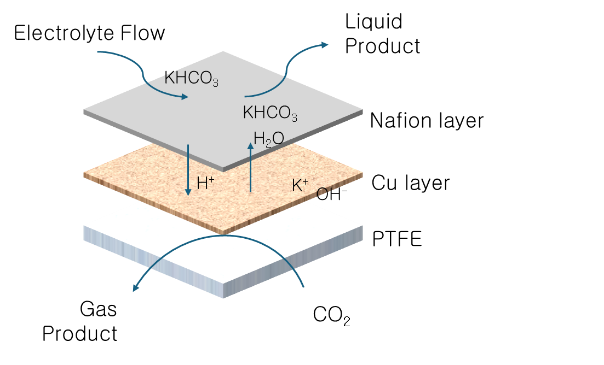
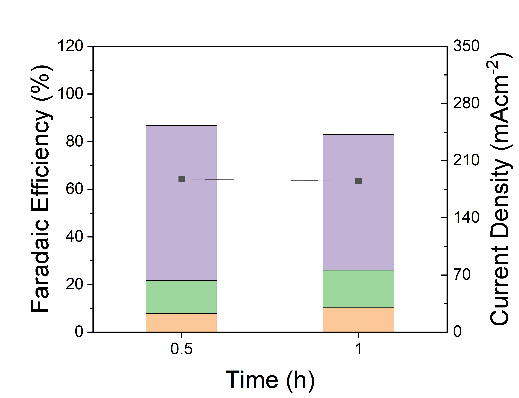
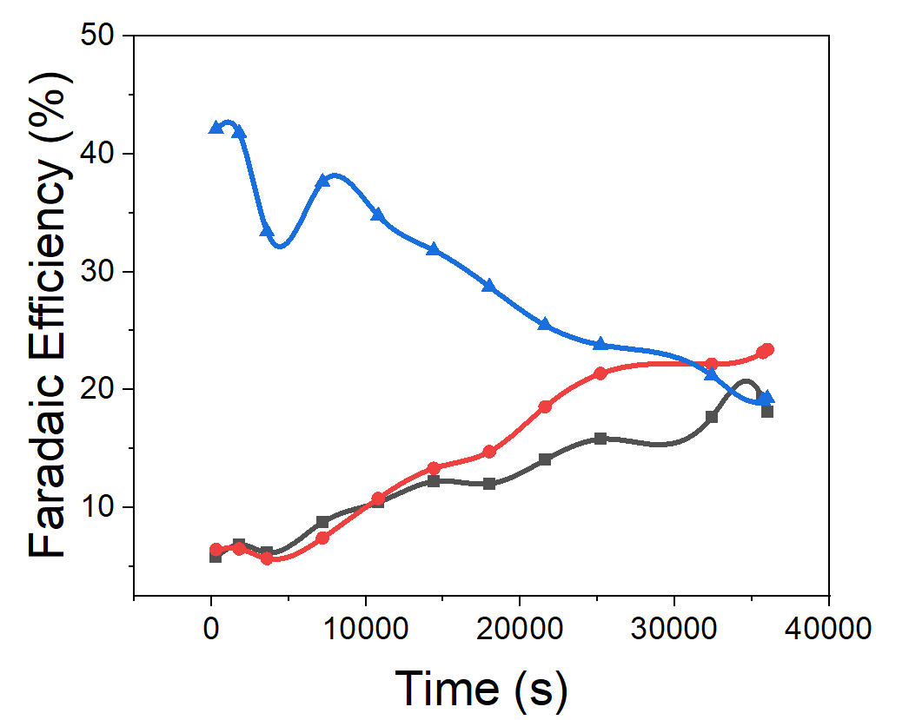
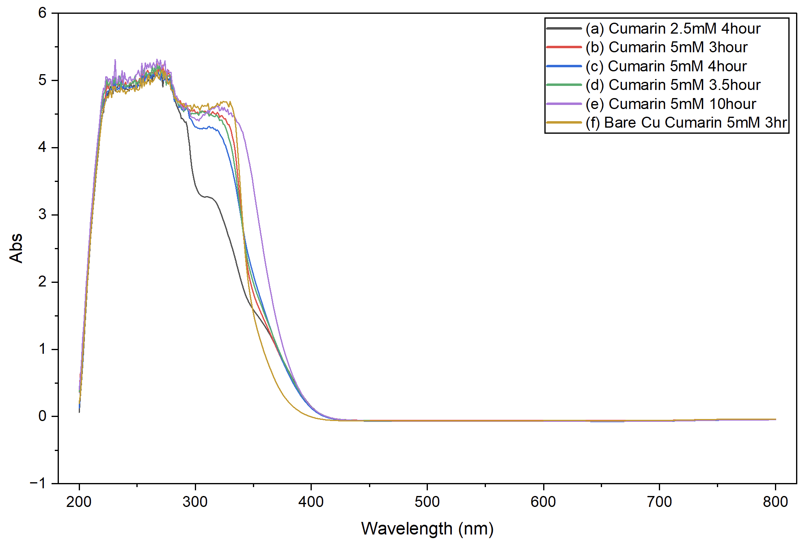
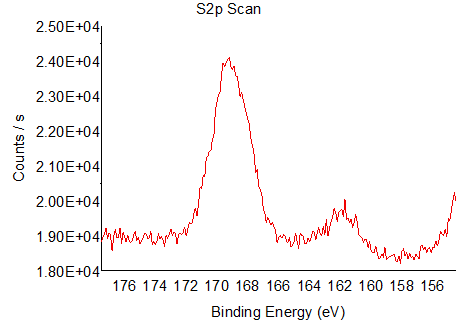

My CO₂ reduction research asked how the ionomer surrounding a Cu catalyst affects product selectivity—and how that interface changes during extended operation.
Why is this research needed?

The electrochemical CO₂ reduction reaction (CO₂RR) converts CO₂ into valuable chemicals. Among metal catalysts, copper is distinctive in its ability to produce substantial amounts of multicarbon (C₂+) products.
Previous studies have reported that coatings of perfluorosulfonic acid (PFSA) ionomers, such as Nafion, can enhance C₂+ production. However, fuel-cell research has shown that hydroxyl radicals (•OH) can degrade PFSA membranes, including Nafion. Hydroxyl-radical generation has also been reported during CO₂RR.
Together, these findings motivate a question: could hydroxyl radicals generated during CO₂RR degrade the PFSA coating and affect the selectivity and stability of the catalyst–ionomer interface?
Research journey
How each experiment led me to the next question.
Making the electrode more resistant to flooding

PTFE-supported Cu–Nafion electrode. We switched from a carbon-paper substrate to PTFE to suppress flooding, preparing the electrode for longer operation.
Exploring three experimental variables
We explored applied potential, Nafion loading, and Cu thickness. We first selected a favorable Cu thickness, then compared Nafion loadings and fixed a coating condition for subsequent experiments.
Cu-thickness screening · Purple: C₂+; green: C₁; orange: H₂.
Nafion-loading screening · Purple: C₂+; green: C₁; orange: H₂.
This experience drew me toward a workflow that uses theory and computation to explore combinations of variables, predict promising experimental conditions, and test those predictions.
Adding time to the question

Early comparison: 30 min and 1 h. Our initial evaluation lasted only 30 minutes. I began to ask: would a condition that worked well in a short test remain effective during prolonged operation?
Time became another variable—one that could change which experimental condition appeared most promising.
Following the loss of selectivity

10 h run · Blue: C₂; red: C₁; black: H₂. Gas products only. When we extended operation under the selected conditions, C₂+ Faradaic efficiency declined substantially within 10 hours, while hydrogen production increased. This shifted my attention from finding a favorable initial condition to understanding why it stopped working.
Looking for a chemical explanation
Why was C₂+ selectivity deteriorating? Reading the literature led me to ask whether radical-driven Nafion degradation studied in PEM fuel cells could also occur during CO₂RR.
We used coumarin-based optical spectroscopy to probe possible hydroxyl-radical formation and XPS to examine changes in the electrode’s surface chemistry. These were complementary ways to investigate the hypothesis; they did not establish the full causal pathway.

Coumarin-based optical measurements (absorbance). 
Post-operation S 2p XPS. Considering a more direct next measurement
I have not yet carried out further experiments. One possibility I would like to investigate is in situ EPR with suitable spin trapping to obtain more direct evidence of radical formation. Whether it would improve detection and strengthen the interpretation in this system remains an open question.